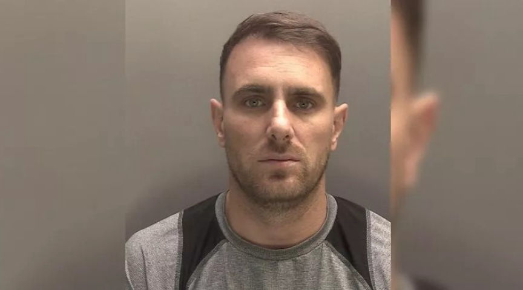
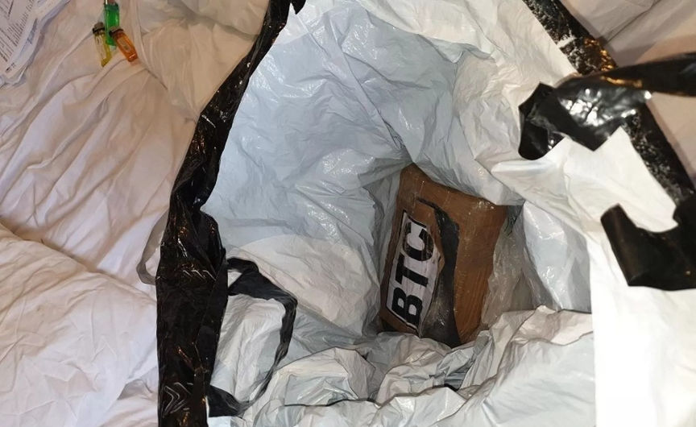
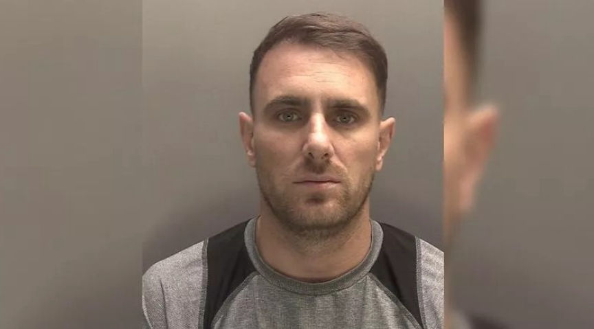
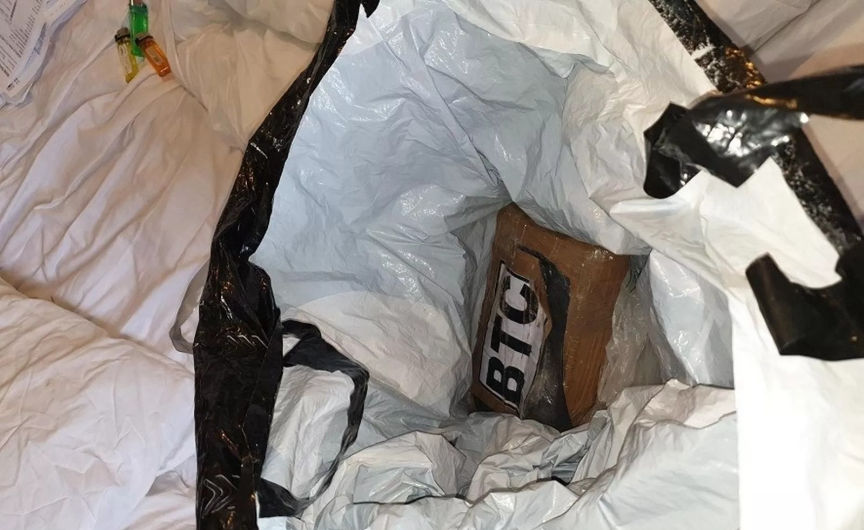

EncroChat Drug Dealer Imprisoned
The Liverpool Crown Court sentenced a Merseyside man who used EncroChat, a now-defunct encrypted messaging platform, to distribute drugs.

Merseyside police revealed in a press release that 39-year-old Mark Murphy was sentenced after he admitted using the username "FiveFingers" on Encrochat to distribute large quantities of heroin, cocaine and cannabis.
Murphy's drug trafficking operation was brought to an end by his arrest in July 2023. The arrest was part of Operation Venetic, an international operation that targeted EncroChat users. Law enforcement agencies infiltrated EncroChat and collected evidence against its users by monitoring their conversations.
Investigations by Merseyside Police disclosed that Murphy supplied class A and B drugs via EncroChat from March 2020 to June 2020. His Ecrochat conversations also revealed that he was planning to acquire a firearm.
A search warrant executed during his arrest resulted in the discovery and seizure of two kilograms of cocaine.

He pleaded guilty to conspiracy to supply approximately 17.75kg of cocaine, 9kg of heroin, and 2kg of cannabis, and possession with intent to supply cocaine. Murphy also pleaded guilty to conspiracy to possess a prohibited weapon and ammunition.
The Liverpool Crown Court sentenced him to 18 years in prison on November 15, 2023.

Mark Murphy
Merseyside police revealed in a press release that 39-year-old Mark Murphy was sentenced after he admitted using the username "FiveFingers" on Encrochat to distribute large quantities of heroin, cocaine and cannabis.
Murphy's drug trafficking operation was brought to an end by his arrest in July 2023. The arrest was part of Operation Venetic, an international operation that targeted EncroChat users. Law enforcement agencies infiltrated EncroChat and collected evidence against its users by monitoring their conversations.
Investigations by Merseyside Police disclosed that Murphy supplied class A and B drugs via EncroChat from March 2020 to June 2020. His Ecrochat conversations also revealed that he was planning to acquire a firearm.
Image of the firearm Murphy wanted to purchase
A search warrant executed during his arrest resulted in the discovery and seizure of two kilograms of cocaine.

A block of coke found in Murphy's home
He pleaded guilty to conspiracy to supply approximately 17.75kg of cocaine, 9kg of heroin, and 2kg of cannabis, and possession with intent to supply cocaine. Murphy also pleaded guilty to conspiracy to possess a prohibited weapon and ammunition.
The Liverpool Crown Court sentenced him to 18 years in prison on November 15, 2023.